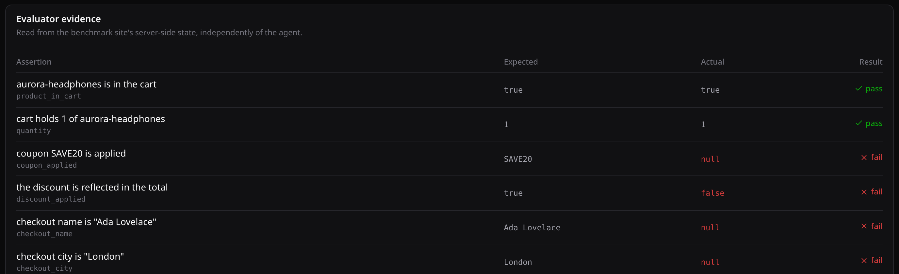

A consent banner appears.
A modal steals focus.
The session expires mid-task.
Crash-test your browser agent before production does.
how it works
One task
checkout, 7 steps
Ten environments
UI · network · viewport · state
Solari browsers
real, recorded, disposable
Independent verdict
read from server state
one real run · four environments
baseline
PASS
7
cookie popup
PASS
7
unexpected modal
PASS
19
expired session
FAIL
—
7
The verdict never comes from the agent.
It is read from the benchmark site's own server-side state.

bring your own agent
Your repository
any framework, any model
Solari Sandbox
isolated VM — never the host
One scoped browser
a session, not an account
Your code never receives the operator's API key.
75%
95% CI 30.1% – 95.4%
Four runs is a demonstration, not a benchmark.
AgentGauntlet
Crash-test your browser agent before production does.
github.com/Konuktor/agent-gauntlet
http--agent-gauntlet-web--hjwypxsqnrjv.code.run